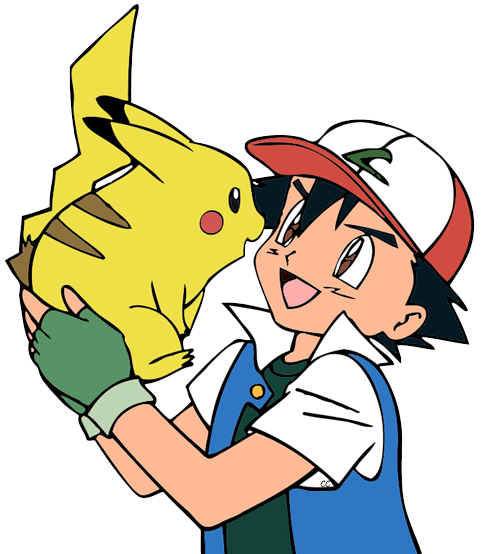
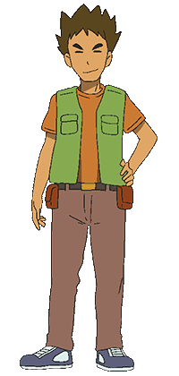

Personajes
Ash Ketchum
Ash Ketchum (サトシ Satoshi en japonés) es el protagonista del anime de Pokémon y ha aparecido en todos los episodios desde el primero, incluyendo todas las películas. Ha viajado por Kanto, Johto, Hoenn, Sinnoh, Teselia y Kalos, y actualmente se encuentra en la isla Melemele de la región de Alola en la escuela Pokémon.
Ash es un entrenador Pokémon que junto con su Pokémon inicial Pikachu, obtenido de manos del profesor Oak en Pueblo Paleta, va recorriendo las regiones del mundo Pokémon con el objetivo de reunir las medallas de gimnasio necesarias para participar en una Liga Pokémon y ganarla, y así estar un paso más cerca de convertirse en un maestro Pokémon. En su camino también hay antagonistas como el Team/Equipo Rocket, quienes siempre van en busca de atrapar al Pikachu de Ash para llevárselo a su jefe.
Su madre, Delia Ketchum, también ha aparecido en varias ocasiones en el anime, mientras que su padre es desconocido, ya que nunca ha aparecido en el anime, aunque sí se le ha mencionado en el EP002 junto con su abuelo1. Se sabe que su padre es un entrenador Pokémon como él, y que actualmente está viajando igual que Ash.
Misty
Misty (カスミ Kasumi en japonés) de Ciudad Celeste, fue una de las protagonistas de la serie de anime Pokémon. Viajó por Kanto, el Archipiélago Naranja y Johto junto a Ash, Brock y Tracey durante la serie original.
Actualmente es la líder del Gimnasio Celeste y una entrenadora de Pokémon de tipo agua. Sus hermanas son Daisy, Violet y Lily.
Jessie
Jessie (ムサシ Musashi en japonés) es la integrante femenina del Team/Equipo Rocket y una antagonista recurrente del anime junto con James y Meowth.
En el episodio Entrenamiento a tope (ES) / Recuerdo de entrenamiento (HA) ‹№› se ve cómo fue que se juntó con James y Meowth, y así empezaron sus misiones como un trío en el Team/Equipo Rocket.
James
James (コジロウ Kojirō en japonés) es el integrante masculino del Team/Equipo Rocket y también el antagonista de la serie junto con Jessie y Meowth.
En el episodio Entrenamiento a tope (ES) / Recuerdo de entrenamiento (HA) ‹№› se ve cómo se juntó con Jessie y Meowth, y así empezaron sus misiones en el Team/Equipo Rocket.
Brock
Brock (タケシ Takeshi en japonés) de Ciudad Plateada, fue uno de los protagonistas de la serie del anime Pokémon. Viajó por Kanto, Johto, Hoenn y Sinnoh junto a Ash Ketchum y otros personajes durante la mayoría del anime.
Es un criador Pokémon, y un verdadero experto cocinero que siempre maravilla a los demás con sus platos. Antes de embarcarse en su aventura Pokémon, era el líder de gimnasio de Ciudad Plateada. Ahora está a cargo del gimnasio su hermano, Forrest. Su padre, y sus numerosos hermanos también se encuentran en Ciudad Plateada.
Actualmente está estudiando para ser un doctor Pokémon en Johto.
Tracey Sketchit
Tracey Sketchit es una observadora de Pokémon que toma el lugar de Brock durante el tiempo que pasa con la profesora Ivy . Después de las aventuras de la Liga Naranja de Ash , él trabaja como asistente del Profesor Oak .
Profesor Oak

El profesor Samuel Oak (professor Samuel Oak en inglés, オーキド ユキナリ博士 Dr. Yukinari Oukido en japonés), o simplemente profesor Oak, es el profesor Pokémon de la región de Kanto y el principal mentor de Ash Ketchum en el anime. Estudia a los Pokémon y es reconocido como la mayor eminencia en cuanto a Pokémon se refiere. Gran aficionado a la poesía, colabora en un programa de radio de Ciudad Trigal llamado La hora del profesor Oak, cuya ayudante es Rosa. Protagoniza también al final de los episodios del anime en Japón con su propia sección, la Lectura del profesor Oak..
Dawn
Dawn en Hispanoamérica y en inglés, Maya en España (ヒカリ Hikari en japonés), de Pueblo Hojasgemelas/Hojaverde, fue una de las protagonistas de la serie de anime Pokémon. Viajó por Sinnoh junto a Ash Ketchum y Brock durante la serie Diamante y Perla, y por Teselia junto a Ash Ketchum, Iris y Cilan/Millo durante algunos episodios de la decimoquinta temporada de la serie Negro y Blanco.
Su objetivo siempre ha sido llegar a ser una gran coordinadora Pokémon, como lo fue su madre, llegando a participar en el Gran Festival de Sinnoh y quedando en 2° lugar al perder en la final contra Zoey/Zoe por muy pocos puntos.
Al final de la serie Diamante y Perla ella se va de viaje por la región de Hoenn para conocer junto con sus Pokémon, el origen de los concursos Pokémon. En la decimoquinta temporada regresa para viajar nuevamente junto a Ash y participar en la Copa Júnior del Pokémon World Tournament. Pero al poco tiempo, decide regresar a Johto, donde competirá para la próxima Copa Wallace/Plubio.
Cilan
Cilan en Hispanoamérica y en inglés o Millo en España (デント Dent en japonés) fue uno de los protagonistas de la serie Negro y Blanco del anime. Viajó junto a Ash e Iris por Teselia y las Islas Decolora/Decoloras.
Junto con sus dos hermanos, Chili/Zeo y Cress/Maíz es el líder del Gimnasio Striaton/Gres. Actualmente viaja por la región de Kalos y es un conocedor/sibarita Pokémon.
Pikachu

Pikachu es un Pokémon de tipo eléctrico introducido en la primera generación. Es el Pokémon más conocido de la historia, mayormente por ser el acompañante del protagonista del anime, Ash Ketchum y la mascota representante de la franquicia Pokémon. Es el Pokémon inicial de Pokémon Amarillo y Pokémon: Let's Go Pikachu! A partir de la segunda generación, es la forma evolucionada de Pichu.